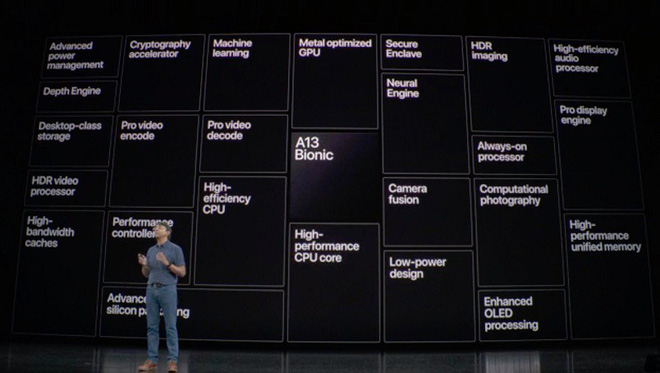

Đến cả tên gọi cũng xa rời...
Cũng giống như mọi năm, sự kiện iPhone năm nay đơn giản chỉ là tổng hợp các tin đồn. Bộ 3 camera, thiết kế mặt trước giữ nguyên, chip cảm biến vị trí mới (U1), tất cả đều ra mắt mà không có gì bất ngờ.
Chỉ có tên gọi của iPhone mới là khó hiểu. Từ trước đến nay, iFan đã quá quen với các "hậu tố" trong tên gọi của sản phẩm Táo như Pro, Max, Air, Plus v...v... Một số "hậu tố" được chia sẻ giữa các dòng sản phẩm với nhau, điển hình là tên gọi Pro và Air đều có trên cả Mac và iPad. Điều này khá dễ hiểu, bởi cả Mac và iPad đều có thể phân chia cho nhóm người dùng cần sự tiện dụng tối đa (Air) và nhóm người dùng cần đa dạng tính năng cho công việc (Pro).
Riêng iPhone thì không cần Air hay Pro. iPhone đã nhẹ sẵn rồi, nói "Air" là thừa. Và iPhone là sản phẩm dành cho tất cả mọi người, chứ chẳng phải là cho nhóm "Pro" cao siêu. Bao năm nay vẫn thế, cứ gọi tên Pro là xa rời người dùng phổ thông hơn một chút. Người dùng phổ thông có cần một con chip hiệu năng mạnh ngang ngửa Xeon trên máy tính bảng? Người dùng phổ thông có cần hỗ trợ eGPU trên laptop?
Người dùng phổ thông có cần ngồi nghe Táo khoe về cách gia công vỏ ngoài, về những chi tiết trong thiết kế chip trên điện thoại? Không. Những thành công để đời của Táo như iPhone 6 hay iPhone X đều đã thành công bằng các chiến dịch chẳng dính dáng gì đến góc nhìn "Pro" cả.
Ấy vậy mà Apple đã thực sự biến iPhone thành một dòng sản phẩm "Pro", đã trình bày sự kiện theo kiểu "Pro". Tuy không đòi hỏi kiến thức cao siêu gì với những người có hiểu biết kỹ thuật, trong lễ vén màn iPhone 2019 Apple vẫn cứ cố khoe về kỹ thuật vỏ ngoài, về số operation thực hiện một giây trên chip, về cơ chế AI...
Chưa bao giờ sự kiện iPhone lại khô khan đến thế. Thậm chí, nếu bạn theo dõi sự kiện qua YouTube, bạn có lẽ đã nhận ra rằng số người xem iPhone 11 Pro còn ít hơn cả số người xem iPhone 11 "thường". Người ta đã chán nản và bỏ đi khi Apple khoe khoang về hình tượng "Pro" mới dành cho iPhone.
Nhưng "Những kẻ ở Apple luôn hành xử một cách hợp lý. Trên tất cả, hãy luôn tin vào điều đó", một nhà báo công nghệ kỳ cựu đã từng khẳng định như vậy. Thật khó để tin rằng Tim Cook không dự liệu được trước tác dụng phụ không mong muốn của tên gọi Pro.
Mục đích thực sự
Chắc chắn, Cook có một mục tiêu ẩn giấu đằng sau tên gọi "Pro" lần đầu tiên xuất hiện trên một chiếc iPhone. Và để nhìn được mục tiêu ấy, hãy nhìn thằng vào iPhone 11 Pro.
Chiếc iPhone này có gì mới mẻ không? Thiết kế tai thỏ vẫn được duy trì từ 2017 tới nay, trong khi các hãng Android đã đua nhau làm tràn viền. Bộ 3 camera trên mặt lưng hứa hẹn tạo ra trải nghiệm ảnh chụp đẹp nhất trong lịch sử, nhưng Samsung thì đã có smartphone 3-camera từ năm ngoái. Năm nay, Samsung đang chễm trệ cả 2 vị trí đầu tiên trên bảng xếp hạng DxOMark về chất lượng ảnh chụp. Lợi thế duy nhất của Apple là sức mạnh chip, nhưng đó cũng không phải là lợi thế mới, không phải là một thứ người dùng cần thực sự quan tâm.

Thực sự, iPhone không có gì đột phá, có lẽ bởi Apple đang để dành cho cú sốc năm 2020. Nhưng Apple vẫn cần phải duy trì doanh số và doanh thu iPhone sau nhiều quý ngừng tăng trưởng. Cách duy nhất còn lại, là tặng cho iPhone một tên gọi mới, để thúc đẩy người dùng nhìn iPhone theo một cách mới.
Giải pháp của Tim Cook: thôi không có gì mới thì... đặt tên mới vậy. Tim Cook không cần iFan phải hiểu những gì Apple đã nói về khâu gia công, về kiến trúc chip... Tim Cook chỉ cần iFan ghi nhớ tên gọi "Pro", cần họ mang ấn tượng rằng iPhone năm nay đại diện cho một trải nghiệm vốn chưa từng có trên iPhone những năm trước.
Năm của Samsung, OPPO và Google
Nói một cách công bằng, năm nay là năm đáng buồn nhất dành cho iPhone. Những năm S trước đây còn có Siri, có chip 64-bit hay 3D Touch (dù thất bại nhưng 3D Touch vẫn thể hiện tham vọng rất lớn). iPhone 7 dù chứng kiến chu kỳ làm mới của Apple bị nâng lên 3 năm nhưng ít nhất còn có camera kép để tạo trào lưu xóa phông, còn bỏ cổng tai nghe và ra mắt AirPods để dư luận bàn tán...
Năm nay, chiếc iPhone Pro được khoe là "Innovation" (đột phá) nhưng chẳng thấy đột phá một chút nào cả. Sự xuất hiện của cái tên "Pro" trên iPhone chỉ là một chiêu trò kinh doanh từ con cáo già Tim Cook mà thôi.